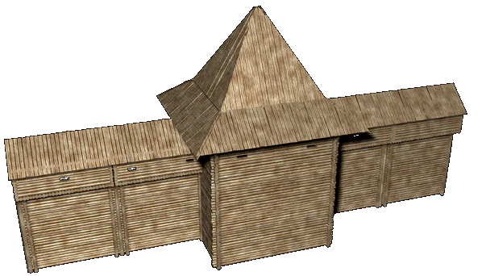

 |
Древнерусская усадьба-замок |
|
| Замок представлял
собой поселение, находившееся в полном владении
одного феодала. Обычно оно было хорошо
укрепленным и являлось центром окружавших его
вотчинных владений. Площадь, занимаемая замком,
была невелика -- как правило, менее одного
гектара. Чаще всего замок располагался на вершине холма, у
подножия которого находилось селище, при этом
довольно часто замки перерастали в города.
Боярские замки были подобны княжеским, близки к
замкам по форме укреплений и внегородские
монастыри. Центром замка был двор князя -- княжеский дворец. Довольно часто дворец представлял собой двух-трехъярусное зданием с высокими теремами. Парадным, княжеским, был второй этаж, где располагалась широкая галерея -- место летних пиров -- и большая княжеская палата. Большинство замков имело свою небольшую церковь. Стены замка состояли из внутреннего пояса жилых клетей и более высокого внешнего забора. Плоские кровли клетей служили боевыми площадками, а пологие бревенчатые сходы вели на стены прямо со двора замка. Вдоль стен в землю вкапывались большие котлы для «вара» -- кипятка, которым поливали воинов противника во время штурма. Иногда из замка прорывались глубокие подземные ходы, выходившие в сторону от замка. Сам замок отделялся от окружавших его поселений рвом, через который был перекинут подъемный мост. Его ворота с башнями имели вид тоннеля с тремя заслонами, которые могли в нужный момент преградить путь врагу. За воротами возвышалась башня - самое высокое здание замка, которое не было связано с крепостными стенами и являлось как бы вторыми воротами замка. В то же время башня часто служила последним прибежищем защитников замка в случае их окружения. В ней же сходились все внутренние пути замка -- только через нее можно было попасть в хозяйственный район клетей или к княжескому дворцу. Тот, кто жил в этой массивной башне, обозревал все, что происходило в замке и вне его. Он управлял всеми движениями людей в замке, и только с его ведома можно было по-пасть в княжеские хоромы. |
|
Текст и
иллюстрации (c) 1997 Snowball Interactive Entertainment, Inc. |